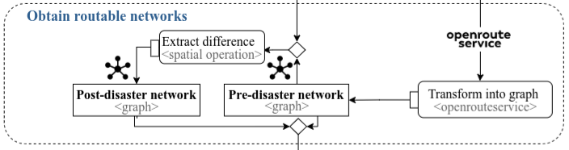

In this section that describes the lane of the workflow “Obtain routable networks”, we created the two outputs (a) pre-disaster network and (b) post-disaster network. The main objects used as inputs are the flood extent and the OSM road network from the previous lane Select Area of Interest.
We transform into graph the road network from OSM using openrouteservice, which finally led to create the pre-disaster network.
The flood extent is used to extract the difference with the pre-disaster network obtaining the post-disaster network graph.

Fig.1 The lane obtain routable networks used ORS transforming the OSM network into a graph modeling the road network before and after the flooding
The following map compares the road network from OSM and the routable network from ORS. Unlike the OSM road network, the ORS graph includes the variable “toid” and “fromid” among others. These variables are used as source and target to calculate shortest paths using the Dijkstra algorithm. A limitation of this methodology is that the id from OSM and ORS are different and information such as the address is lost during the transformation of the road network into a graph. One alternative to face this limitation is to use geocoding from the centroid of a segment obtaining its address.
A comparison between the original OSM network and its transformation into a routable graph by ORS
Once this lane is finished, the pre-processing phase is ove providing the main objects of the study, the flood extent, municipalities, road network and hospitals. We used these objects in the next phase of centrality and accessibility analysis
Source Code
# Obtain routable networkIn this section that describes the lane of the workflow "Obtain routable networks", we created the two outputs (a) pre-disaster network and (b) post-disaster network. The main objects used as inputs are the flood extent and the OSM road network from the previous lane Select Area of Interest. * We <span class= "font-color">**transform into graph**</span> the road network from OSM using openrouteservice, which finally led to create the pre-disaster network. * The flood extent is used to <span class="font-color"> **extract the difference**</span> with the pre-disaster network obtaining the post-disaster network graph. The following map compares the road network from OSM and the routable network from ORS. Unlike the OSM road network, the ORS graph includes the variable "toid" and "fromid" among others. These variables are used as source and target to calculate shortest paths using the Dijkstra algorithm. A limitation of this methodology is that the id from OSM and ORS are different and information such as the address is lost during the transformation of the road network into a graph. One alternative to face this limitation is to use geocoding from the centroid of a segment obtaining its address.```{=html}<figure><iframe width="780" height="500" src="data/media/ors_osm_network.html" title="Quarto Documentation"></iframe><figcaption> A comparison between the original OSM network and its transformation into a routable graph by ORS</figcaption></figure>``````{r}#| eval: false#| echo: true#| code-summary: "How to create comparison visualization map"## Load dataors_network <-st_read(postgresql_connection, DBI::Id(schema="agile_gis_2025_rs", "ors_raw_network"))osm_network <-st_read(postgresql_connection, layer="planet_osm_line")## Create subset using a bounding boxors_subset <- ors_network |> dplyr::filter(undrctI ==62320) |>st_bbox()xrange <- ors_subset$xmax - ors_subset$xminyrange <- ors_subset$ymax - ors_subset$ymin## Expand the bounding boxors_subset[1] <- ors_subset[1] + (1* xrange) # xmin - leftors_subset[3] <- ors_subset[3] + (1* xrange) # xmax - rightors_subset[2] <- ors_subset[2] - (2* yrange) # ymin - bottomors_subset[4] <- ors_subset[4] + (2* yrange) # ymax - top## Convert bounding box into polygonors_subset_bbox <- ors_subset %>%# st_as_sfc() ors_subset_bbox_manual <-c(-51.215816,-30.034622,-51.206353,-30.025891) names(ors_subset_bbox_manual) <-c("xmin","ymin","xmax","ymax")bbox_manual <-st_as_sfc(st_bbox(ors_subset_bbox_manual, crs=4326))## Use the polygon to subset the networksf_use_s2(FALSE)intersection_ors <- sf::st_intersection(ors_network, bbox_manual)intersection_osm <- sf::st_intersection(st_transform(osm_network,4326), bbox_manual)## Mapview mapslibrary(mapview)library(leafpop)m1 <-mapview(intersection_osm, color="#6e93ff",layer.name ="OpenStreetMap - Geometry",popup=leafpop::popupTable(intersection_osm, zcol=c("osm_id","name","way")))m2 <-mapview(intersection_ors,color ="#d50038",layer.name="OpenRouteService -Graph",popup=popupTable(intersection_ors))library(leafsync)sync(m1,m2) ```Once this lane is finished, the pre-processing phase is ove providing the main objects of the study, the flood extent, municipalities, road network and hospitals. We used these objects in the next phase of centrality and accessibility analysis